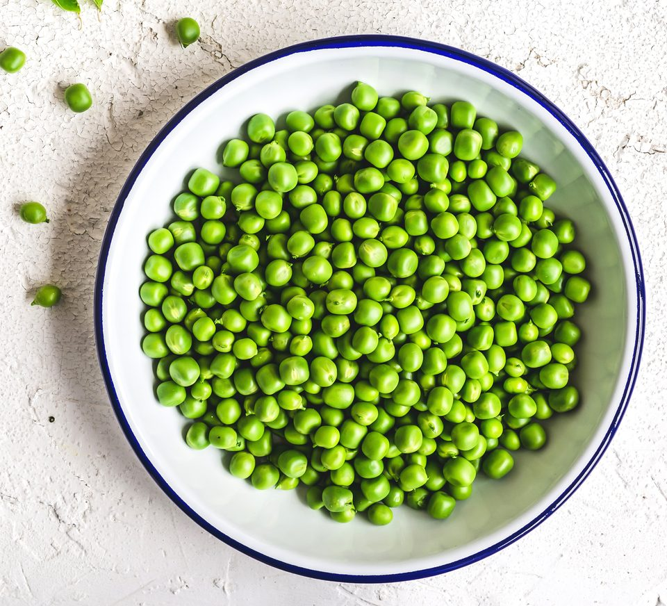

English Peas

The greatest English peas you have ever eaten
These Sweet English Peas are the perfect side dish to any mircorwavable meal!
Ingredients:
- Bag of frozen peas
- Butter
- Water
- microwave
Steps:
- Place frozen peas in bowl
- Add a spoonfull of butter & a 1/4 cup of water
- Microwave for 2 minutes or until butter has melted
- Let cool off and serve!